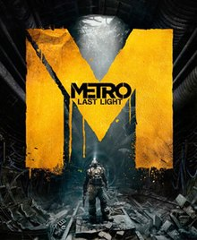
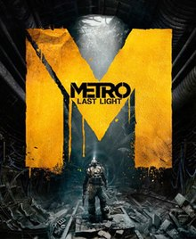

Різні серії игр

Історія всесвіту гри
У всесвіті гри у його початку хм правели безсмерті дракони але троє великих:
Гвин-повелитель света,Нито-повелитель мертвих,
Ведьма Изалита-повелительница вогню чиє їм'я забуто на віка та
хитрий пегемей якого так легко забути, отримавший темну душу почавши рід людський.
За допомогою першого народженого дракона Сита
вони вбили древних драконів й так почалася Єра вогню,
Сит получив титул герцога та велик замок навкол кристального гроту.
 


Історія всесвіту гри
У всесвіті гри ядерні странни обмінялися ядереними ударами тому від радіації люди ховаються під землею
у тунелях меиро але й там небезпечно усілякі мутанти такі як чорні яких за просьбою Хана. Артему пройдеться
пройти крізь поля битви між Рейхом та Красними.
щоб дойти до Мельника та добратися до Д6 щоб підірвати логово Чорних


Історія всесвіту гри
Майже у всій історії всесвіту игр DOOM розповідається про одну людину думгая який був
єдиним хто вижив на марсе і в аду. Звідки сестра восресительница
перенисла його в інший всесвіт де й протікає історії игр
DOOM 2016 та DOOM Eternal.


Історія всесвіту гри
Bсесвіт гри є альтернотивою версією нашої землі у , який в зоне отчуждения проводилися опити
над людьми та тваринами.Ми Мечений який вижив після крушения грузовика смерті та принесли до
Сидоровича ,який вирішає допомогти Меченому, який загубив пам'ять але перед чим він відправляє його
на завдвння.